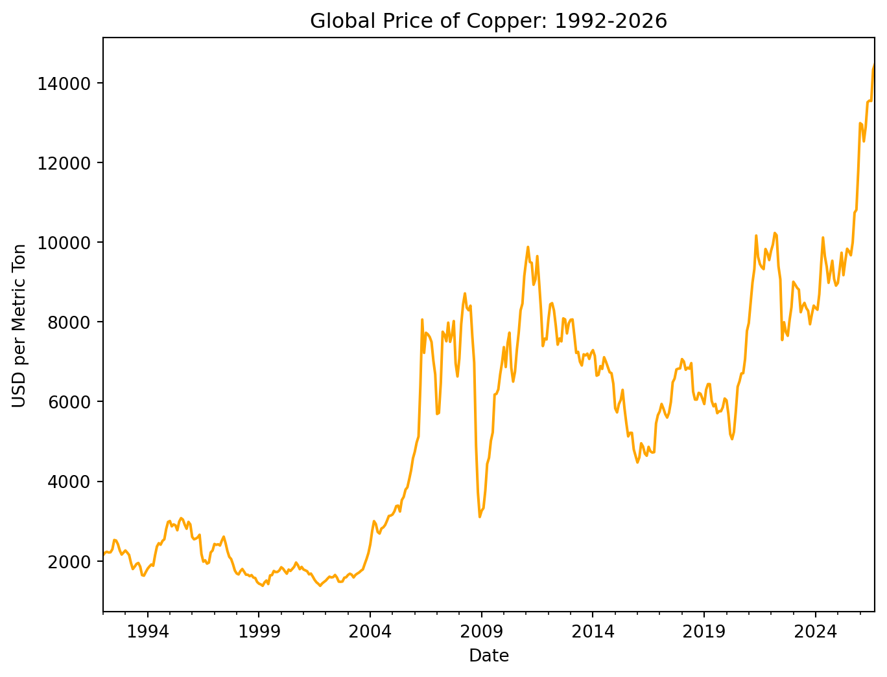
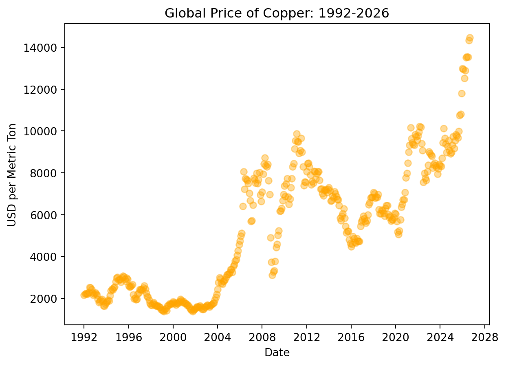
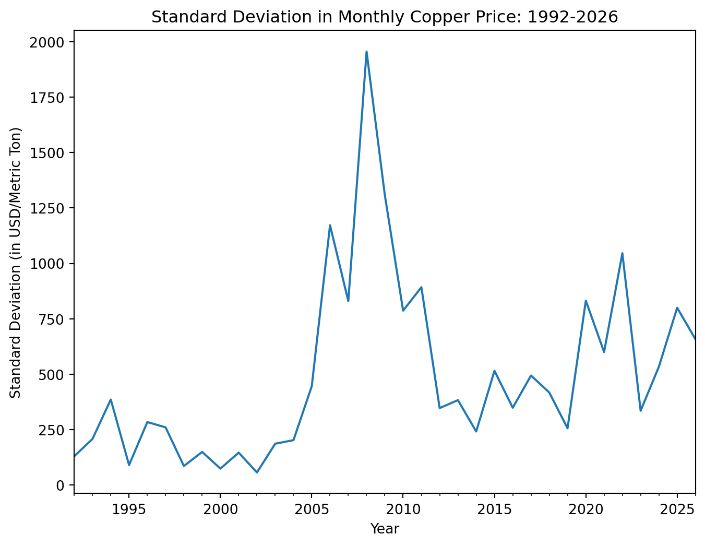
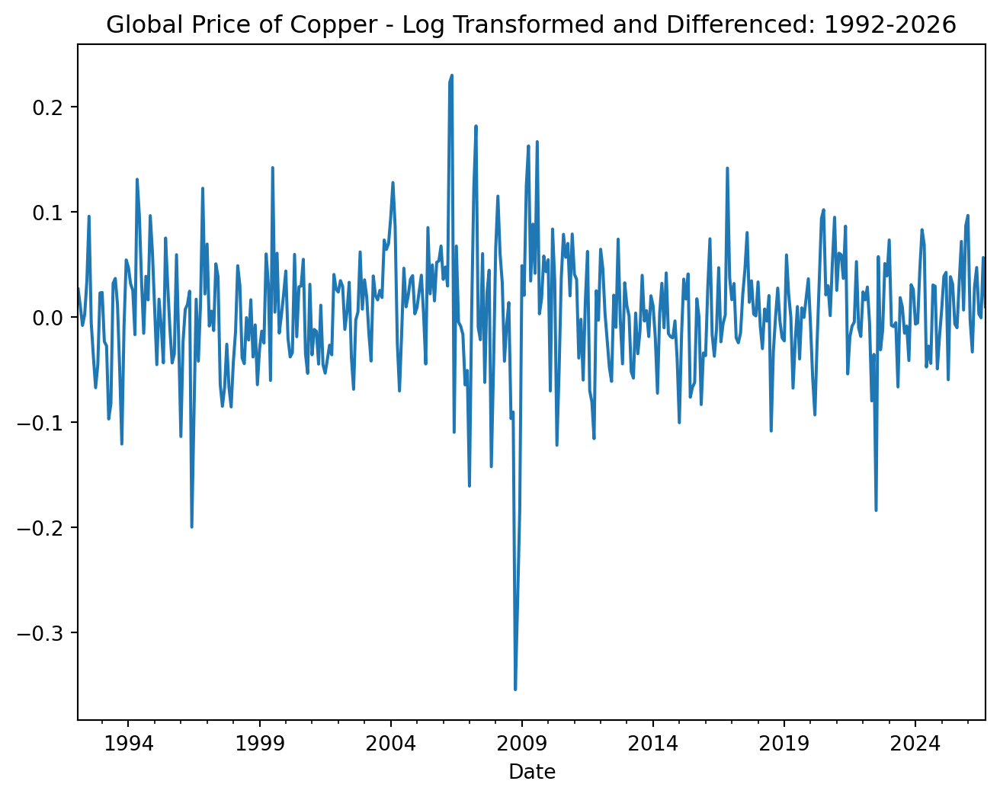
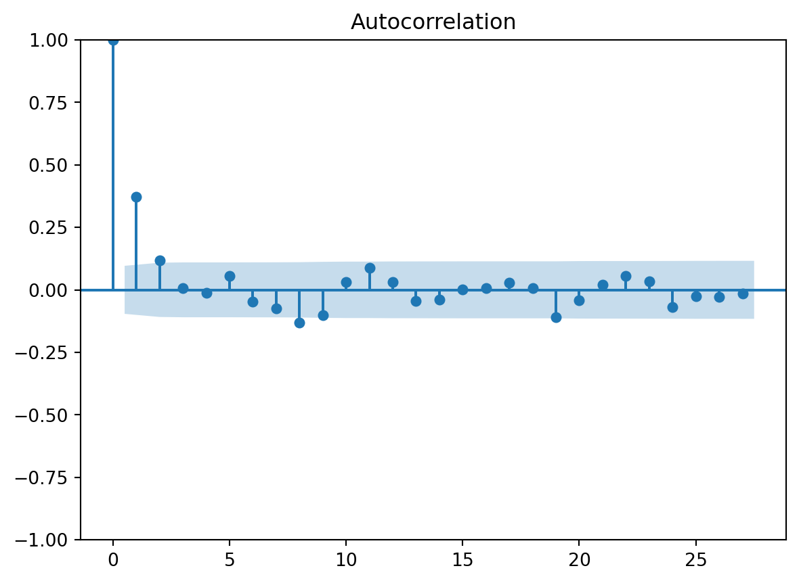
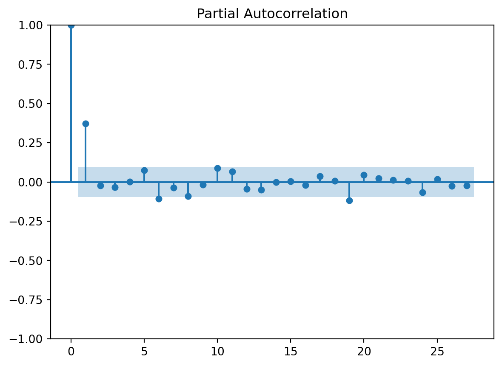
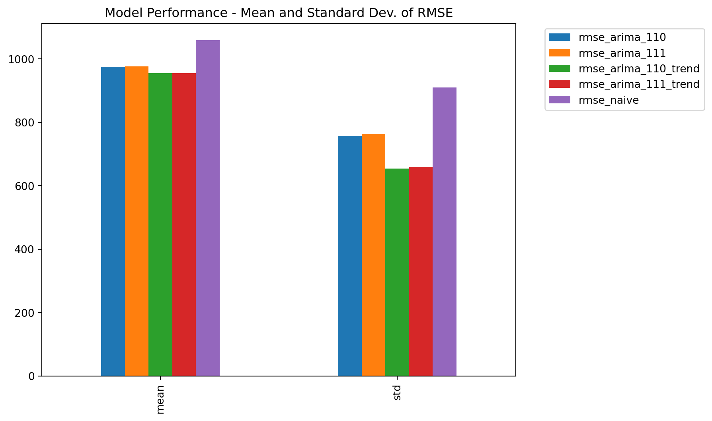
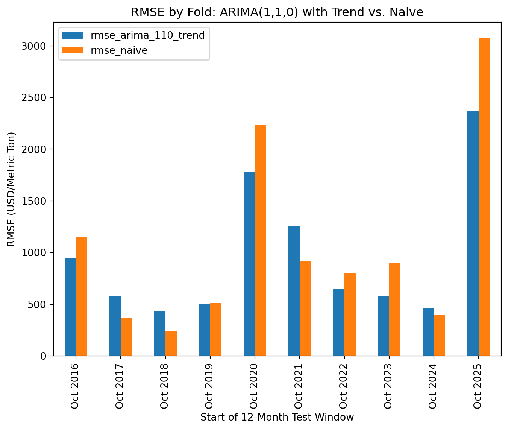

#Necessary imports
import numpy as np
import pandas as pd
import matplotlib.pyplot as plt
from sklearn.model_selection import TimeSeriesSplit
from sklearn.metrics import root_mean_squared_error
from statsmodels.tsa.arima.model import ARIMA
from statsmodels.graphics.tsaplots import plot_acf, plot_pacf
#Load copper price data
#Data is in USD/Metric Ton
#Data is monthly
data = pd.read_csv('copper_price_usd_per_ton.csv')
#Convert date column to datetime data type and index
data['date'] = pd.to_datetime(data['date'])
data = data.set_index('date')
data = data.asfreq(freq='MS')
#Converting from dataframe to series to make this easier to work with later on
data = data['PCOPPUSDM']Time Series Cross-Validation
Python
sklearn
Model Selection
ARIMA
Learn how to use rolling-origin cross-validation to compare models without data leakage
Introduction
When undertaking a time series forecasting project, you will generally want to compare a variety of models before settling on the one that performs best on your dataset. To be able to compare models effectively, you need to be able to see how each model performs on data it was not trained on (i.e. “unseen data”).
A simple train-test split is not sufficient for this task because the test set is specifically set aside for seeing how your final model performs on unseen data. It is not used for comparing candidate models.
What you need is some form of a validation set: a portion of the training set that is set aside for comparing models, fine-tuning hyperparameters, and assessing performance. You could create a separate validation set for this purpose, but there is a way that is even more flexible, efficient, and effective. It’s a process called cross-validation.
Cross-validation is used in many machine learning applications. The basic idea is that instead of setting part of your training data aside as a “validation set”, you divide your training data up into “folds”. Then you train your model on all but one of the folds and validate the model’s performance on the remaining fold. By repeating this process until every fold has been used for both training and validation, you get not just a single result for model performance but multiple results. These can be considered individually or averaged together.
Performing cross-validation for time series is similar in concept but different in application. Since time series require that the order of the data be kept intact, randomly dividing your training set into folds and testing on them like you would with cross-sectional data will create data leakage.
In this article, we explore the basic idea behind time-series cross-validation (tsCV), sometimes called rolling-origin cross-validation. Then we walk through a basic coding example of how to implement this type of cross-validation in Python.
The Key Concept
With time-series cross-validation, the first rule is to keep your data in chronological order. Unlike regular cross-validation, the data is never shuffled.
Second, the way the data is split is different. Instead of every fold taking a turn as training data and as test data, each test fold is always later than the data used to train the model. The model only ever learns from the past and is tested on the future, just like it would be in real life.
Imagine you have monthly sales numbers for the past 3 years (36 months in total), and you want a model that forecasts the next 3 months. Because your forecast horizon is 3 months, each test fold is also 3 months long. A 3-fold split would look like this:
| Round | Train on | Test on |
|---|---|---|
| 1 | Months 1–27 | Months 28–30 |
| 2 | Months 1–30 | Months 31–33 |
| 3 | Months 1–33 | Months 34–36 |
In each round, you fit your candidate model(s) from scratch on the training months, forecast the next 3 months, and measure the error against what actually happened. The training data grows by one fold each round, mimicking how you would refit a model as new data arrives.
Finally, compare models using the mean and standard deviation of their errors across all folds, and also look at the fold-by-fold results to see where each model wins or struggles.
This approach is called an expanding window, and it is the most common setup. The training data “expands” with each successive round of cross-validation. A popular variation is the rolling window, where the training set stays a fixed length and slides forward each round, dropping the oldest data. Choosing the right approach often comes down to domain knowledge and an understanding of the unique constraints and aspects of your data.
A Simple Example in Python
Having discussed the basic idea behind time-series cross-validation, let’s walk through a coding example in Python. For the purpose of this example, we will use a dataset that tracks the monthly global price of copper in USD per metric ton.
The dataset can be downloaded here if you would like to follow along. It was accessed from GovSpending.org on 11/25/2026.
Import Packages and Load Data
Let’s start by importing the necessary packages, loading our data, and preparing its datetime index.
Next, we will check some basic info about the dataset and view the first 5 rows.
print(data.info())
print(data.head())<class 'pandas.core.series.Series'>
DatetimeIndex: 417 entries, 1992-01-01 to 2026-09-01
Freq: MS
Series name: PCOPPUSDM
Non-Null Count Dtype
-------------- -----
417 non-null float64
dtypes: float64(1)
memory usage: 6.5 KB
None
date
1992-01-01 2150.579629
1992-02-01 2208.892259
1992-03-01 2231.785510
1992-04-01 2214.166816
1992-05-01 2219.315056
Freq: MS, Name: PCOPPUSDM, dtype: float64Explore the Data
Now, let’s do some basic exploration of this dataset, starting by plotting the data.
#Build a simple line plot to view the data
data.plot(figsize=(8, 6), legend=False, color='orange')
plt.title('Global Price of Copper: 1992-2026')
plt.xlabel('Date')
plt.ylabel('USD per Metric Ton')
plt.show()
From this line plot, we can see that the price of copper, overall, has an upward trend from 1992 to 2026. The variance of the price was fairly low from around 1992 to 2005. The price became much more unstable after that point.
The price saw a dramatic increase from 2025 to 2026. In a real-world project, it would be important to do more research to see if this trend is likely to continue.
Let’s use a scatterplot to further assess the direction and spread of the data.
plt.scatter(x=data.index, y=data, alpha=.4, color='orange')
plt.title('Global Price of Copper: 1992-2026')
plt.xlabel('Date')
plt.ylabel('USD per Metric Ton')
plt.show()
Even more than with the line plot, the extent of the variance and changing nature of the trend over time becomes apparent with this visual. The points are very tightly clustered together from 1992 to 2005. Then came a period of instability, with sharp rises and falls, from 2005 to 2024. Finally, as noted before, we see a sharp increase from 2025 to 2026.
One last chart will help us understand the changing variance over time. We will resample our data to yearly data and calculate the standard deviation. Then we will plot these values to see how variance has fluctuated over time.
data_std_by_year = data.resample('YS').std() #Resample to yearly frequency
data_std_by_year.plot(figsize=(8, 6))
plt.title('Standard Deviation in Monthly Copper Price: 1992-2026')
plt.xlabel('Year')
plt.ylabel('Standard Deviation (in USD/Metric Ton)')
plt.show()
The takeaway is clear: variance in our data increased significantly toward the middle years of the dataset. It has since come down somewhat, but not to the low levels seen early in the time series.
We want to explore ARIMA models as a forecasting option. In order to help stabilize our data, we will take the natural log of the series using numpy’s np.log() function before moving further.
#Log transform the data to control for the fluctuating variance
data_log = np.log(data)This will help to take care of the changing variance within the dataset. Now let’s check to see if differencing the data can successfully make it stationary.
As a reminder, ARIMA models assume that your time series is stable in mean and variance over time (i.e. stationary). We need to find the correct differencing order (known as d) to be able to specify it within the ARIMA model. For more information about ARIMA models check out our Introduction to ARIMA Article.
#Difference the data to make it stationary, dropping the resulting null value
data_log_diff = data_log.diff(1).dropna()
#Plot the differenced series to check visually for stationarity
data_log_diff.plot(figsize=(8, 6))
plt.title('Global Price of Copper - Log Transformed and Differenced: 1992-2026')
plt.xlabel('Date')
plt.show()
Our mean and variance appear relatively stable now, indicating that we have successfully made our time series stationary through differencing it one time. Therefore, our d order, the differencing order, will be set to “1” in our ARIMA models.
Now, let’s check ACF and PACF plots to determine which AR (p) and MA (q) orders are most suitable.
plot_acf(data_log_diff)
plot_pacf(data_log_diff)
plt.show()

Looking at these, we see that the ACF plot shows a gradual decline from lag 1 to lag 3. The PACF plot shows a sharp decline from lag 1 to lag 2. This suggests an AR order of 1 (p) and an MA order of 0 (q) are likely appropriate. However, we will include another variation of the model as well for consideration.
In addition, since our data has a clear trend, we will set the trend parameter to ‘t’ for a linear trend as an alternate option to each of our standard ARIMA (without trend) models.
So, here are the models we will be testing using rolling-origin cross-validation:
- ARIMA(1, 1, 0)
- ARIMA(1, 1, 1)
- ARIMA(1, 1, 0) with Drift
- ARIMA(1, 1, 1) with Drift
We will also consider a naive model as a baseline to compare our ARIMA options with.
Rolling-Origin Cross-Validation
Okay, now for the fun part. First, let’s set up a dictionary that contains our candidate models’ names and the parameters we will be setting up for them:
# Each entry: a name for the model and the corresponding settings to use
models = {
"arima_110": {"order": (1, 1, 0), "trend": None},
"arima_111": {"order": (1, 1, 1), "trend": None},
"arima_110_trend": {"order": (1, 1, 0), "trend": "t"},
"arima_111_trend": {"order": (1, 1, 1), "trend": "t"},
}Next, we will use the sklearn function TimeSeriesSplit to generate the correct indices for our cross-validation folds. You can find more information about this function in the official scikit-learn documentation.
We will specifically set the test_size parameter here to the horizon we wish to calibrate our models for. In this case, we will say that a 12-month forecasting horizon is expected. Because we have plenty of historical data and a relatively short horizon, we can afford to set the n_splits parameter higher than the default 5. You need to consider the size of your dataset and how far out you want to forecast in production when choosing these parameters.
# Prepare time-series split for 10 folds with a test size of 12 months
tscv = TimeSeriesSplit(n_splits=10, test_size=12)Okay, we are ready to run our cross-validation now. This is done using a for loop, a standard Python feature that runs the same block of code once for each item in a sequence. In our case, there are two loops, one inside the other. The outer loop cycles through the folds, using the indices provided by our time-series split. The inner loop cycles through the model settings in the dictionary we set up earlier, fitting and scoring each model on the current fold.
Loops like this can become quite complicated, so the goal here is to keep the process understandable and efficient.
#Create blank list to hold results from the loop
results = []
#Set up loop to loop through our folds and train/test models against the indices provided by our split
#Results are saved for analysis
for fold, (train_index, test_index) in enumerate(tscv.split(data_log)):
train, test = data_log.iloc[train_index], data_log.iloc[test_index]
actual = np.exp(test.to_numpy())
# Basic info about this fold
row = {
"fold": fold,
"train_end": train.index[-1],
"n_train": len(train),
}
# Fit and score every model in the dictionary, incorporating a bias correction in our predictions
for name, settings in models.items():
res = ARIMA(train, order=settings["order"], trend=settings["trend"]).fit()
fc = res.get_forecast(steps=len(test))
mu = fc.predicted_mean.to_numpy()
var = fc.var_pred_mean.to_numpy()
preds = np.exp(mu + var / 2)
row["rmse_" + name] = root_mean_squared_error(actual, preds)
# Naive baseline: repeat the last training value
naive = np.repeat(np.exp(train.iloc[-1]), len(test))
row["rmse_naive"] = root_mean_squared_error(actual, naive)
results.append(row)
cv = pd.DataFrame(results)Note: Claude was used to help organize this code clearly.
Because we modelled the log of the price, we convert the forecasts back with exp(). Adding half the forecast variance corrects a small downward bias that a plain exp() would introduce.
Analyze Results
Now we are ready to analyze the results of our cross-validation. If we set up our loop in an organized way, this should be easy to do. In our case, we use the Root Mean Squared Error (RMSE) to compare our models’ performance. This metric quantifies the error in our models’ forecasts while penalizing “big misses” more severely.
We assess performance across individual folds, the mean performance across all folds, and the standard deviation across all folds to see which models are most consistent. The standard deviation is sometimes overlooked, but it is a very important part of the analysis. You could have a model that performs very well on an error metric, but if it is wildly inconsistent across folds it could be less trustworthy in production.
#Show the full performance across folds
cv.round(4)| fold | train_end | n_train | rmse_arima_110 | rmse_arima_111 | rmse_arima_110_trend | rmse_arima_111_trend | rmse_naive | |
|---|---|---|---|---|---|---|---|---|
| 0 | 0 | 2016-09-01 | 297 | 1035.2605 | 1033.5828 | 951.3998 | 948.5878 | 1155.1629 |
| 1 | 1 | 2017-09-01 | 309 | 447.2568 | 433.8481 | 573.4314 | 551.3769 | 365.3773 |
| 2 | 2 | 2018-09-01 | 321 | 326.7990 | 324.1172 | 437.0468 | 435.7364 | 236.1670 |
| 3 | 3 | 2019-09-01 | 333 | 480.7013 | 482.4412 | 499.8020 | 502.5303 | 509.5604 |
| 4 | 4 | 2020-09-01 | 345 | 1933.1637 | 1956.0084 | 1777.5467 | 1797.0094 | 2238.4407 |
| 5 | 5 | 2021-09-01 | 357 | 1062.4341 | 1056.0967 | 1252.2756 | 1247.5353 | 918.0985 |
| 6 | 6 | 2022-09-01 | 369 | 771.4809 | 776.3358 | 649.9905 | 654.5179 | 801.6419 |
| 7 | 7 | 2023-09-01 | 381 | 736.6137 | 736.8125 | 581.3914 | 580.6307 | 896.3589 |
| 8 | 8 | 2024-09-01 | 393 | 320.4414 | 322.0660 | 464.5026 | 465.5527 | 401.0023 |
| 9 | 9 | 2025-09-01 | 405 | 2637.4033 | 2647.2070 | 2366.4335 | 2376.0113 | 3074.4097 |
cv.filter(like="rmse").agg(["mean", "std"]).round(4)| rmse_arima_110 | rmse_arima_111 | rmse_arima_110_trend | rmse_arima_111_trend | rmse_naive | |
|---|---|---|---|---|---|
| mean | 975.1555 | 976.8516 | 955.3820 | 955.9489 | 1059.6220 |
| std | 757.3816 | 763.7815 | 654.1652 | 660.0621 | 910.9061 |
cv.filter(like="rmse").agg(["mean", "std"]).round(4).plot(kind='bar', figsize=(8, 6))
plt.title('Model Performance - Mean and Standard Dev. of RMSE')
plt.legend(bbox_to_anchor=(1.05, 1), loc='upper left')
plt.show()
Taking all these results together, we can see some interesting points that help us determine what type of model is most appropriate for this dataset, given the 12-month forecasting horizon.
Taking all these results together, a few points stand out. The picture becomes a little less clear than it might appear at first.
What the averages tell us
- The ARIMA(1, 1, 0) model with trend has the lowest mean RMSE and the lowest standard deviation. The ARIMA(1, 1, 1) model with trend is nearly identical on every fold, so the extra MA term adds nothing. When two models perform the same, it is best to go with the simpler one.
- The naive model has the highest mean RMSE.
On averages alone, ARIMA(1, 1, 0) with trend looks like the clear winner. But averages can hide a lot, so let’s look at the folds individually.
What the individual folds tell us
# How many folds did the trend model beat the naive model?
wins = (cv["rmse_arima_110_trend"] < cv["rmse_naive"]).sum()
print(f"ARIMA(1,1,0) with trend beat naive in {wins} of {len(cv)} folds")ARIMA(1,1,0) with trend beat naive in 6 of 10 folds# Compare the two models fold by fold, labelled by the start of each test window
fold_view = cv[["rmse_arima_110_trend", "rmse_naive"]].copy()
fold_view.index = (cv["train_end"] + pd.DateOffset(months=1)).dt.strftime("%b %Y")
fold_view.plot(kind="bar", figsize=(8, 6))
plt.title("RMSE by Fold: ARIMA(1,1,0) with Trend vs. Naive")
plt.xlabel("Start of 12-Month Test Window")
plt.ylabel("RMSE (USD/Metric Ton)")
plt.show()
The picture is much closer than the averages suggest:
- The trend model beats the naive model in 6 of 10 folds. That’s more often than not, but it is far from a sweep.
- Two folds stand out: the 12-month windows starting in October 2020 and October 2025. Both were periods of sharp price movement, and in both, the naive model missed badly while the ARIMA models with trend held up better.
- Those two folds account for the trend model’s entire lead. If we set them aside, the naive model actually edges ahead.
So which model should we choose?
The fair conclusion is that the ARIMA models with trend handle sharp price movements better, while in calmer periods the simple naive forecast is similar in performance. Which matters more depends on how the forecast will be used. If a big miss is costly, the trend model’s ability to hold up in volatile years is a real advantage. If not, the naive model is hard to beat for its simplicity.
Because each model wins in different conditions, it would also be worth trying an ensemble that averages the naive and ARIMA forecasts. Combinations like this often outperform both of their individual parts.
In a real-world project, we would likely want to consider other types of models alongside the ARIMA models. Exponential Smoothing models, naive models with drift, or even more advanced machine learning models could be considered.
Conclusion
Time-series cross-validation is an important and powerful tool in finding the best forecasting model for almost any time series. It allows us to see how our model performs on unseen data without sacrificing the temporal order of our data in the process. While mastering the concepts and code takes a little practice, the end result will be better and more thoughtful forecasts. I would encourage you to find a time series dataset that interests you and see if you can put together a cross-validation loop to determine the appropriate model.